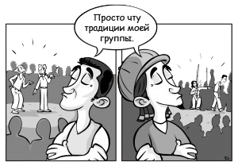

Фундаментализм и капоэйра. 2/3
Вопросы аутентичности часто связаны с эстетическими ценностями, социо центризмом и рыночным резервом. Концепцию, как обычно, пытаются применить, чтобы утвердить или измерить перспективы или практику одного перед кем-то еще. Это также, зачастую, основано на мифах о пуризме; смехотворный подход для такой междисциплинарной и межкультурной практики, как капоэйра.
Это второй пост на тему «Фундаментализм и капоэйра», в котором я представлю разговор, состоявшийся между мастерами Луизом Эдуардо, Пауло и мной. Этот диалог, возможно, поставил под угрозу мои исследовательские работы на том мероприятии. Это и заставило меня задуматься о вопросах терпимости к разнообразию, межкультурного обучения, культурной и географической аутентичности и о проблеме устойчивого сотрудничества нутрии мира капоэйры.
Я уверен, что мы не сможем претендовать на эффективность искусства, как образовательного инструмента, а также проводника, включающего в социальную жизнь. Не сможем до тех пор, пока все открыто не начнем обсуждать эти темы. Действительно ли наши мастера и школы открыто подходят к данным вопросам и ради общей ли пользы? Что на самом деле поддерживает суждения большинства групп и стилей? Учитывая все эти вопросы можем ли мы, на самом деле, претендовать на то, что капоэйра продвигает включение в социальную жизнь?
Примечание: все имена, использованные в этой статье, вымышлены. Цель поста в том, чтобы на примере своего показать сложности в налаживании межгруппового и межстилевого сотрудничества.
Фундаментализм и капоэйра
Часть II: Вопрос (недостатка?) аутентичности
Вскоре после моего прибытия Луиз Эдуардо подошел ко мне с разговором о мастер-классе, который я устраивал на следующей неделе с местре Эрнесто — иностранным гостем. По сути, он сказал, что я не могу объявлять о мастер-классе по капоэйре ангола с местре Эрнесто, т.к. его звание мастера не было подтверждено внутри сообщества капоэйры ангола; следовательно, это незаконно. Титул Эрнесто был дан ему мастером из другого стиля капоэйры.
Поэтому, Луиз Эдуардо сказал мне, что я не могу продвигать деятельность капоэйры ангола вместе с Эрнесто, используя его титул. Что я должен рекламировать либо „Семинар по капоэйре с местре Эрнесто“, либо «Семинар по капоэйре ангола с Эрнесто». Я вежливо ответил, что не стану менять свой рекламный материал, и даже не смотря на все моё уважение к их мнению, я отношусь к Эрнесто как к местре, и был рад пригласить его провести классы по Анголе в своей школе.
Я сразу понял, что мне предстоит жесткая игра, и что мой выбор усложнил мою работу.
Вопросы аутентичности часто связаны с эстетическими ценностями, социо центризмом и рыночным резервом. Концепцию, как обычно, пытаются применить, чтобы утвердить или измерить перспективы или практику одного перед кем-то еще. Это также, зачастую, основано на мифах о пуризме; смехотворный подход для такой междисциплинарной и межкультурной практики, как капоэйра.
В данном случае, не смотря на их честную попытку сохранить капоэйру ангола, я не мог отделаться от мысли, что эти, прочие факторы также играли очень важную роль.
Такая дискуссия для меня звучала бессмысленно, ведь каждый вид искусства является подлинным для тех, кто выразил через него свои ценности, перспективы и жизнь. Было бы куда полезнее обсудить, как отстоять принципы непохожести внутри искусства, свойство, привитое капоэйре создавшими её мульти-этническими группами. Кроме того, стоило бы поговорить о более адекватном подходе к установлению понимания и сотрудничества внутри нашего сообщества.
Луиз Эдуарду спросил меня, как бы я себя чувствовал, если бы менее опытный капоэйрист, недавно прибывший на «мою территорию», был нанят, чтобы провести здесь мастер-классы. Учитывая, что я, более оптыный учитель, уже работаю в этом месте.
Его сравнение было не совсем точным. Местре Эрнесто – компетентный мастер, с пятнадцатилетним опытом капоэйры в своей стране. Последние 10 лет он посвятил исключительно капоэйре ангола. В целях развития и распространения практики КА, Эрнесто ежегодно оказывает содействие одному из самых значительных мероприятий в Тихоокеанском регионе. Отметим, что последние несколько лет Луиза Эдуардо также неоднократно приглашали принять в нем участие.
Тем не менее, чтобы понять проблемы культурной и географической аутентичности, а также устойчивых партнерских отношений внутри сообщества, полезно задаться вопросом, почему Эренсто еще ни разу не был приглашен поработать в Центре Луиза Эдуардо?
Подходит ли Эрнесто для того, чтобы давать классы по КА – это вопрос, который не влияет на хорошее качество его уроков и на приверженность капоэйре. Даже не смотря на то, что некоторые в сообществе капоэйры ангола и могут иметь право судить об этом.
Должно ли быть такое несбалансированное отношение мастеров из разных стилей и групп взаимным – это вопрос для всего сообщества капоэйры. Хотя я всегда считал, что невзаимное партнерство не может длиться долго.
Проблемы аутентичности, не смотря на то, что обычно она отражает эстетические ценности этноцентрических групп, как правило, тесно связаны с рынком резервов практики. Но всё же, я был поражен. Я никогда еще не вовлекался в такой конфликт, будучи учителем; жесткая игра.
Эти вопросы также затрагивают и отношения между бразильскими сторонниками разных стилей. Большинство мастеров КА не работают с мастерами других стилей; иногда даже с мастерами из других групп КА. То же самое можно сказать и о большинстве мастеров Капоэйры Режиоал.
То, как Луиз Эдуарду поставил под сомнение титул Эрнесто в КА, и то, что он чувствовал себя правым вмешиваться в деятельность моей группы, основываясь лишь на своих суждениях, всё это показало мне, как некоторые люди в капоэйре действуют, будучи абсолютно убежденными в своей правоте; но, к сожалению, при этом пренебрегая убеждениями других людей и жертвуя потенциальным взаимообменом.
Опять же, этот опыт оставил мне несколько вопросов, которые могут заинтересовать и других практикующих:
- Почему межстилевые приглашения не взаимны?
- Посещали бы вы классы по КА от мастера, титул которого не признан в КА?
- Наняли бы вы его/её проводить мастер-класс?
Что же касается нашей группы, могу вас заверить, что мы провели отличное время, обучаясь, тренируясь и играя с Эрнесто. Также мы многое вынесли просто из разговоров с ним.
C. M. Eurico 4capoeirathoughts.com
Перевела mOrigammi.